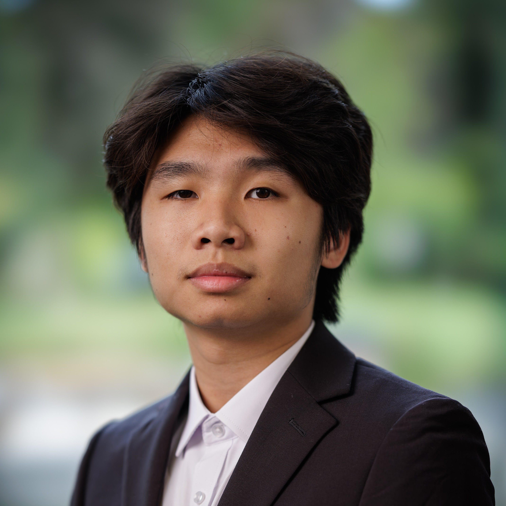

DongYu Weng
Sophomore at Carleton College • Physics & Computer Science
I build at the intersection of low-level systems and physical hardware. As a manager at the Carleton Makerspace, I focus on making complex physical phenomena tangible through digital fabrication and custom-built software tools.
How I Work
I learn best by building things. I wrote a Scheme interpreter in C because I wanted to know what actually happens when code runs, and I built a plastic granulator because I wanted to see how recycling works from the inside. Usually that means getting it wrong a few times first, and I'm fine with that.
These days I'm doing research with Professor Martha-Elizabeth Baylor on the plastics used to make optofluidic chips. Before that I spent a semester building optics demos for outreach. I like projects where I get to be in the lab and at the keyboard in the same week.
Research Experience
Integrated Optofluidic Devices
Sep 2026 – PresentResearch Assistant | Carleton College | Prof. Martha-Elizabeth Baylor
Characterizing the photopolymers (light-sensitive plastics) used to fabricate integrated optofluidic devices, which combine optical waveguides and fluidic channels on a single chip. I am helping build apparatus to measure key resin properties such as bulk refractive index, optical loss per unit length, maximum change in refractive index, and stiffness.
By comparing how these properties shift across resin formulations, the goal is a reference table of materials that lets engineers pick the right resin for an application, for example a rubbery formulation for wearables or a glassy one for harsh environments.
Optics Education Research
Jan 2026 – Jun 2026Research Assistant | Carleton College | Prof. Martha-Elizabeth Baylor
Worked with Professor Baylor on hands-on optics demos for outreach, aimed at making ideas like light and lenses easy to see and play with for young kids and classroom visitors. I prototyped the hardware, with the goal of making each demo simple enough that someone could use it without an explanation.
Work Experience
Makerspace Manager
Sep 2024 – PresentCarleton College | Northfield, MN
- Assist students and faculty members in projects ranging from sticker making to robot building.
Physics Lab Assistant
Sep 2026 – PresentCarleton College | Northfield, MN
- Serve as a hands-on instructor in physics lab sections, guiding students through experimental setup, data collection, and analysis.
- Explain the physics behind each experiment, troubleshoot equipment, and help students build confidence working through problems on their own.
Engineering Design Associate
May 2025 – Aug 2026Fuzhou Changhui Light Steel Structure Building Company | Fuzhou, China
- Converted 2D building schematics into 3D models using CAD software, improving visualization and structural accuracy.
- Collaborated with engineers and designers to ensure compliance with project specifications and safety standards.
Data Analysis Intern
Mar 2024 – Jun 2024Office of the State Superintendent of Education | Washington, DC
- Researched the effects of chronic absenteeism and truancy within DC schools, culminating in a presentation to the public.
Barista
Jul 2023 – May 2024Luna Hall DC | Washington, DC
- Served as cashier and prepared specialty boba beverages in a fast-paced customer service environment.
Certifications & Skills
Certifications
- Google: Cyber Security; Data Advanced Analysis Specialization; IT Automation with Python Specialization
- Georgetown School of Continuing Studies: Cybersecurity: Protecting Our Digital Future
Languages
Developer Tools
Selected Projects
Scheme Interpreter
A recursive bottom-up parser and environment-model evaluator built in C. Built from scratch to understand the fundamentals of language implementation.
Chaotic Oscillator Analysis
Simulating Asymmetric Coupled Duffing Oscillators. Used NumPy for high-speed vectorization to generate Poincaré sections and analyze Permutation Entropy.
Plastic Recycler
Designed precision steel cutting blades in Fusion 360 and implemented Arduino-based stall detection for a custom PLA granulator.
Resume
Download or view my full resume.
Download PDF